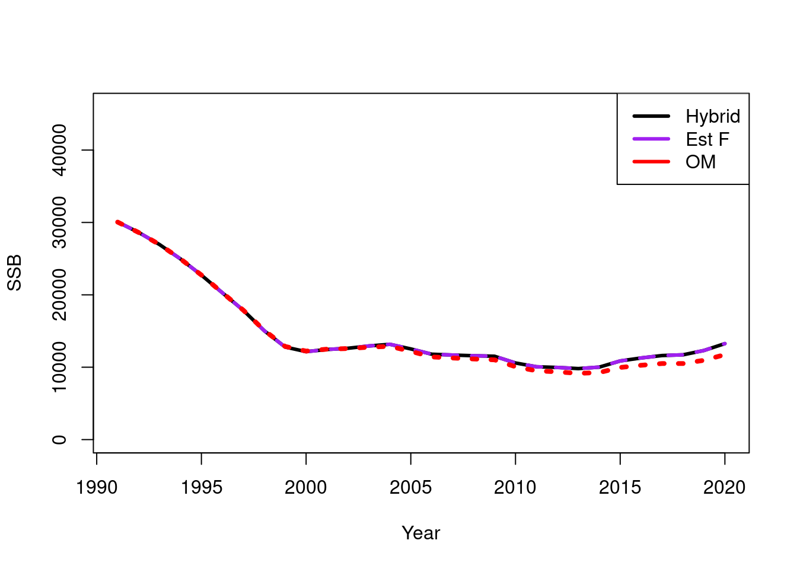

Chapter 5 Exploring alternative fishing mortality parameterisations (F)
The current Alaskan sablefish stock assessment (Chapter 3) estimates annual fishing mortality values for each gear \(g\) denoted by \(F^g_{y}\). This parametersation poses to potential problems when considering future assessment models and spatial models. The first is, the number of parameters will increase as the number of gears increase. The fishery is currently going through a transformation whereby there is a switch from longline to pots. The second consideration is how to set this up in a spatially explicit model where catch have an added spatial dimension. There are two alternative approaches to the current approach which treat \(F\) as a derived quantity rather than an estimable parameter. The first is to use Newton Raphson method to solve for \(F^g_{y}\). This is the recommended approach in Stock Synthesis (Methot Jr and Wetzel 2013), termed the “hybrid” approach. The previous two methods assume the Baranov catch equation for mortality (Baranov 1918). An alternative is to assume Popes discrete formulation (Pope 1972) which uses exploitation proportions (sometimes called harvest rates or fishing pressure) and has a closed form solution.
A good general overview on these methods can be found in Branch (2009). They describe and compared the continuous Baranov catch equation (Baranov 1918) with Pope’s discrete formulation (Pope 1972). Arguments for using the continuous case is that \(M\) and \(F\) occur simultaneously, also with the continuous case, \(F\) allows for multiple event encounters, this is assuming a fleet has the same selectivity and availability, that a fish that escapes one net can be caught in another. In contrast, the discrete formulation only allows a fish to be caught or escape from an instantaneous event. I have tried to summarize the benefits of the continuous equation in the following list,
- Allows the entire population to be caught (not sure this is that relevant)
- Allows simultaneous \(M\) and \(F\), no need to worry about order of operations. From a coding/practical perspective this is quite attractive. Once you have an F and M you can easily derive all mid-mortality quantities. Where as using a \(U\) approach you need save the population before and after to interpolate to derive mid-mortality quantities.
- The magnitude of \(F\) effects composition data, where as in the discrete case, composition is independent of the magniture of \(U\).
- Allows for multiple catch events of an individual
- Can fit to catch observations thus allows for uncertainty in catches. In practice the uncertainty/variance on catch is very small i.e., coeffecient of variations ranging from 0.01 to 0.1. This essentially states catch is observed with high confidence and in my opinion isn’t that much different to saying catch is known exactly. Note often this high precision on observed catch is needed in order to make the \(F\)’s identifiable. This high precision also muddies the “degrees of freedom” for the model. Although the \(F\)’s look like independent and free parameters they are heavily constrained by the assumptiosn on observed catch variance.
The arguments for the discrete approximation is that there is an analytical solution for \(U\) and so is fast to calculate expected catch, where as \(F\) has to be either solved numerically or estimated as a free parameter (as mentioned earlier).
Chris Francis’s wrote a response to this paper (Francis 2010) where he argues the discrete formulation does not preclude the multiple encounters and that only the data can truly tell us which catch equation is the best one to use.
- Need to make a point about how there may be Automatic differentiation issues with the \(U\) approach. Because there is an
if(U > 0.99)which can cause a fork in the chain rule which can equal a coding nightmare.
The relationship between \(F\) (Instantaneous fishing mortality) and \(U\) exploitation rate for a simple scenario (single fishery) is illustrated in the following R code.
## Params
ages = 1:20
R0 = 1000
M = 0.2
a50 = 3.4
ato95 = 2.4
A = length(ages)
N_age = vector()
N_age[1] = R0
set.seed(123)
for(age_ndx in 2:A)
N_age[age_ndx] = N_age[age_ndx - 1] * exp(-M) * exp(rnorm(1,0,0.5))
barplot(height = N_age, names = ages)
# selectivity at age
S_age = logis(ages, a50, ato95)
## No selectivity
u_range = seq(0,0.8,by = 0.02)
F_range = -log(1 - u_range)
# 1 - exp(-F_range) # back calculate U## the application throught time.
N_1 = 100
par(mfrow = c(2,2), mar = c(2,2,2,1), oma = c(3,2,2,0))
Fs = c(0.2,0.6,1,1.4)
for(i in 1:length(Fs)) {
F_t = Fs[i]
U_t = 1 - exp(-F_t)
M = 0.5
time_ = seq(0,1, by = 0.001)
change_over_time = N_1 * exp(-(F_t+M)*time_)
change_over_time_alt = N_1 * exp(-M*time_[time_<0.5])
change_over_time_alt = c(change_over_time_alt, change_over_time_alt[length(change_over_time_alt)] * (1 - U_t))
change_over_time_alt = c(change_over_time_alt, change_over_time_alt[length(change_over_time_alt)] * exp(-M*time_[time_ < 0.5]) )
plot(1,1, type = "n", xlab = "", ylab = "", ylim = c(0,100), xlim = c(0,1), xaxt = "n", yaxt = "n", cex.main = 1.5,cex.lab = 1.5, main = substitute(paste(F[y], " = ", this_F, " M = ", M), list(this_F = F_t, M= M)))#paste0(, " = ", F_t))
lines(time_, change_over_time, lwd = 4)
lines(time_, change_over_time_alt, lwd = 4, col = "red")
if (i > 2)
axis(side = 1, tick = T, at = c(0,1), labels = c("y", "y+1"), cex.axis = 2)
if (i == 1)
legend('bottomleft', legend = c("Baranov","Discrete"), lwd = 3, col = c("black","red"), cex = 0.8)
}
mtext(side = 1, text = "Time", outer = T, line = 0.7, cex = 1.3)
mtext(side = 2, text = "N", outer = T, line = -1, cex = 1.3)
Set up a simulation
To explore the three methods described above a simple simulation was conducted for a simple age-structured stock assessment. The purpose was to check that the derived methods were reliable so that we can implement them in the spatial model that is development.
bio_params = list(
ages = 1:20,
L_inf = 58,
K = 0.133,
t0 = 0,
M = 0.15,
a = 2.08e-9, ## tonnes
b = 3.5,
m_a50 = 6.3,
m_ato95 = 1.2,
sigma = 0.6,
h = 0.85,
sigma_r = 0.6,
R0 = 8234132,
plus_group = 1 # 0 = No, 1 = Yes
)
other_params = list(
s_a50 = 3.6,
s_ato95 = 2,
s_q = 0.2,
f_a50 = 5,
f_ato95 = 2,
ssb_prop_Z = 0.5,
survey_prop_Z = 0.5,
survey_age_error = c(0.5, 0.4), ## sd, rho (ignored if iid)
fishery_age_error = c(0.5, 0.4), ## sd, rho (ignored if iid)
survey_bio_cv = c(0.1)
)
ages = bio_params$ages
max_age = max(bio_params$ages)
n_years = 30
years = (2020 - n_years + 1):2020
n_ages = length(ages)
## annual fishing mortality
start_F = c(rlnorm(10, log(seq(from = 0.05, to = 0.2, length = 10)), 0.1), rlnorm(10, log(0.13), 0.1), rlnorm(10, log(0.07), 0.1))
recruit_devs = log(rlnorm(n_years, -0.5 * bio_params$sigma_r * bio_params$sigma_r, bio_params$sigma_r))
length_at_age = vonbert(bio_params$ages, bio_params$K, bio_params$L_inf, bio_params$t0)
fishery_ogive = logis(bio_params$ages, other_params$f_a50, other_params$f_ato95)
survey_ogive = logis(bio_params$ages, other_params$s_a50, other_params$s_ato95)
mat_age = logis(bio_params$ages, bio_params$m_a50, bio_params$m_ato95)
weight_at_age = bio_params$a * length_at_age^bio_params$b
## observation temporal frequency
survey_year_obs = years
survey_ages = 1:20
fishery_year_obs = years
fishery_ages = 1:20##################################
### Build TMB OM with Multinomial
##################################
#dyn.unload(dynlib(file.path("TMB","SimpleAgeStructuredModel")))
compile(file.path("TMB","SimpleAgeStructuredModel.cpp"), flags = "",DLLFLAGS="");## [1] 0dyn.load(dynlib(file.path("TMB","SimpleAgeStructuredModel")))
## tolerance form model convergence, all gradients need to be less than this.
grad_tol = 0.001
# these parameters we are not estimating.
na_map = fix_pars(par_list = true_pars, pars_to_exclude = c("ln_catch_sd", "trans_survey_error", "trans_fishery_error","ln_extra_survey_cv","ln_sigma_r"))
ASM_obj <- MakeADFun(TMB_data, true_pars, DLL= "SimpleAgeStructuredModel", map = na_map)## Constructing atomic invpdtrue_report = ASM_obj$report()##################################
### Self Test with estimable F's
##################################
n_sims = 10
est_pars = NULL
ssbs = NULL
for(sim_iter in 1:n_sims) {
if(sim_iter %% 10 == 0)
cat("iter = ", sim_iter, "\n")
sim_data = ASM_obj$simulate(complete = T)
start_pars = ran_start_vals(covar = "ar1")
est_model = MakeADFun(sim_data, start_pars, DLL= "SimpleAgeStructuredModel", map = na_map, silent = T)
opt_modelc = nlminb(est_model$par, est_model$fn, est_model$gr, control = list(iter.max = 10000, eval.max = 10000))
est_pars = rbind(est_pars, opt_modelc$par)
est_rep = est_model$report(opt_modelc$par)
ssbs = rbind(ssbs, est_rep$ssb)
}## iter = 10molten_ssbs = melt(ssbs)
colnames(molten_ssbs) = c("sim", "year", "value")
ggplot() +
geom_line(data =molten_ssbs, aes(x = year, y = value, group = sim)) +
geom_line(data = data.frame(year = 1:31, value = true_report$ssb),aes(x = year, y = value), col = "red", linetype = "dashed", linewidth = 1.2) +
ylim(0,NA) +
labs(x = "Time", y = "SSB (t)") +
theme_bw()